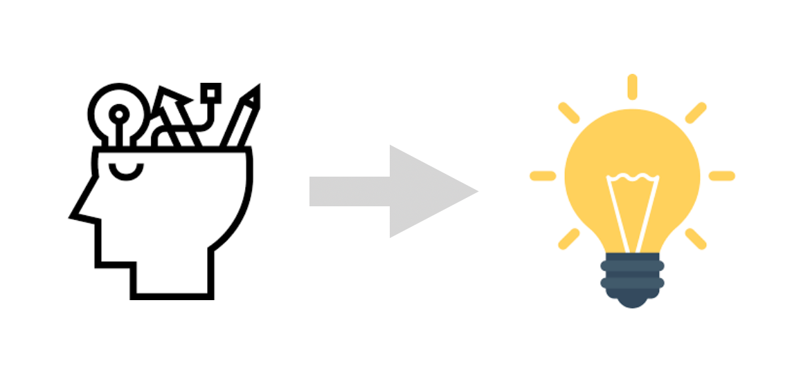
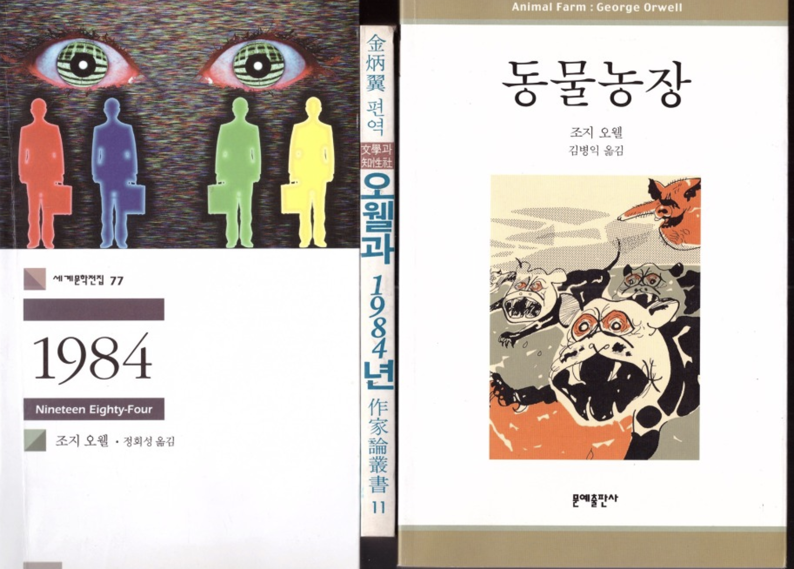

기업의 성장 하려면 통찰을 통해 숨은 본질을 파악해 문제를 해결해 나가는 것이 필요하다. 기업에 있어서 본질은 기업의 존립을 좌우하는 핵심 가치이다.

세계적 기업들은 저마다 본질을 추구하고 있다. 구글은 최근 유튜브, 클라우드 서비스 등의 사업 영역을 확장하고 있지만, 구글의 본질은 검색이다. 애플은 아이폰과 같은 혁신 제품을 생산 했지만 컴퓨터 그 이상의 가치를 추구한다. 바로, 심플이다. 애플은 경쟁사 델과 달리 제품군이 단 4가지였지만, 천문학적인 이윤을 달성할 수 있었다. 애플은 고객에게 심플한 구매 경험을 제공함으로서 애플 브랜드를 더욱 신뢰하게 만들었다. 다음은 미친듯이 심플에 나오는 애플이 단순함을 추구하는 11가지 원칙이다.
애플 혁신을 가능케 한 ‘심플함’의 11가지 원칙
‘냉혹하게, 작게, 최소로, 가동성, 상징, 표현 방식, 평소처럼, 인간을, 회의적으로, 전쟁을, 앞서’ + 생각하라
냉혹하게 생각하라(Think Brutal): 단호하고 명확한 판단이 조직을 나아가게 한다. 사람들을 명확하게 대한다고 해서 냉혹한 인간이 되는 것은 아니다. 팀이 최선의 결과를 거둘 수 있도록 해야 할 말을 하면 된다.작게 생각하라(Think Small): 스티브 잡스는 대기업형 행동양식을 적극적으로 거부했다. 그는 똑똑하고창의적인 인재들로 구성된 작은 집단이 가장 효율적으로 이윤을 낼 수 있다고 믿었고, 그렇게 애플을 조직했다.최소로 생각하라(Think Minimal): 선택지가 많으면 장점이 아니라 부담이다. 선택 범위를 최소화해야 회사도 고객도 명확하게 이해한다. 스티브 잡스는 20가지가 넘는 제품군을 4가지로 축소해 그 효과를 입증했다.- 가동성을 생각하라(Think Motion) : 프로젝트를 망치는 가장 손쉬운 방법은 넉넉한 시간이다. 프로젝트팀을 시간 손실 없이 지속적으로 가동해야 분명한 목표를 향해 창의적으로 사고하고 산만함을 최소화할 수 있다.
상징을 생각하라(Think Iconic): 제품이나 아이디어의 장점을 상징하는 단순하고 강한 이미지를 활용해 고객의 뇌리에 깊은 인상을 남겨야 한다. 백 가지를 나직이 속사이지 말고 한 가지를 크게 부르짖어라.표현 방식을 생각하라(Think Phrasal): 어설픈 제품명은 제품을 진열하기도 전에 곤경을 자초한다. 제품명은 제품이나 회사의 본질을 단어 한두 개로 포착해 가장 단순하고 평확하게 지어야 한다.평소처럼 생각하라(Think Casual): 말 한두 마디로 전할 수 있는 아이디어를 20개짜리 슬라이드로 만드는 것은 낭비다. 화려한 프레젠테이션보다 솔직한 생각과 가공하지 않은 자료가 오히려 믿음직하다.인간을 생각하라(Think Human): 모든 비지니스의 표적은 사람이다. 훌륭한 기술들을 구구절절 설명하기보다 인간적인 용어로 짤막하게 표현할 때 고객과 더욱 가깝게 소통할 수 있다.회의적으로 생각하라(Think Skeptic): 전문가의 의견이나 분석 수치는 명령이 아닌 조언으로 받아들여라, 비즈니스적으로 미묘한 상황, 기업의 더 큰 목표, 다양한 변수를 충분히 고려한 후에 결정하는 것이 좋다.전쟁을 생각하라(Think War): 처음부터 압도적인 전력을 내세우지 못하면 한 번의 타격으로 무너질 수 있다. 일방적 경쟁우위 확보 위해, 모든 무기를 이용하는 것이 내 아이디어를 존속시키는 최선의 방법이다.앞서 생각하라(Think Ahead): 애플은 비즈니스적 성공을 넘어 인류의 진보를 이루었다. 애플의 성패는 단기 이익보다 미래를 실현할 혁신에 집중했던 잡스의 가치관을 어떻게 이어나가느냐에 달렸다.
본질을 꿰뚫 수 있는 통찰력
통찰력은 본질을 꿰뚫을 수 게 하는 능력이다. 대중들은 스마트폰의 대중화로 동영상, 뉴스 컨텐츠 등을 통해서 수많은 정보를 접할 수 있게 됐다. 올바른 정보를 판단의 기준을 세울 수 있도록, 본질을 꿰뚫어 볼 수 있는 통찰력이 필요하다. 통찰력은 다음 세가지를 갖추고 있을때 발휘된다.
- 경험을 통해 생각하기
- 지식 끄집어 내기
- 관점 이동
경험은 정보의 본질을 이해 함에 있어 여러 관점으로 볼 수 있게 한다. 본질을 꿰뚫기 위해 풍부한 경험을 가지고 있는 것이 유리하다. 예를 들어 아이폰을 경험해 보았다면, 애플이 추구하는 브랜드 본질을 보다 직관적으로 이해할 수 있다. 다음으로 지식을 끄집어 내는 과정을 통해 본질에 대한 접근을 할 수 있다. 예를 들어 파타고라스 정리에 대한 지식을 가지고 있다면 삼각비가 무엇인지를 좀더 쉽게 알 수 있다. 마지막으로 관점이동이다. 오웰의 ‘동물농장’, 1984 작품은 전체주의 비판 시각을 가지고 있다. 작가의 관점으로 작품을 읽으면, 해당 작품이 이야기 하고자 내용의 본질을 파악하는데 도움이 된다.
